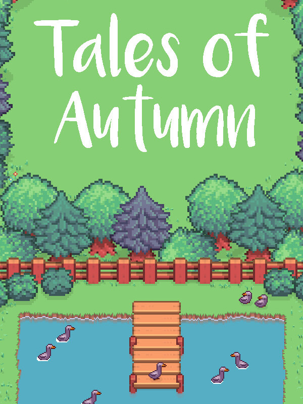

Tales of Autumn
Tales of Autumn
Details
|  | |
| Playtime | 2h 24m 0s |
| Last Activity | 2023-12-21 0:02:36 |
| Added | 2023-11-26 0:07:49 |
| Modified | 2025-10-02 10:29:14 |
| Completion Status | Completed |
| Library | Steam |
| Source | Steam |
| Platform | PC (Windows) |
| Release Date | 2023-10-12 |
| Community Score | |
| Critic Score | |
| User Score | |
| Genre | Adventure Arcade Role-playing (RPG) Simulator |
| Developer | |
| Publisher | |
| Feature | Single Player |
| Links | Steam Official Website Twitch Nintendo |
| Tag | 2D Agriculture Character Customization Controller Cute Family Friendly Fantasy Farming Sim Indie Inventory Management Life Sim Nature Pixel Graphics Resource Management RPG Simulation Singleplayer Top-Down |
Description


Creatures
Befriend and tame wild creatures and ranch animals, each with their own specific requirements to stay at your ranch!
Terrain
Change the terrain of your land to create different biomes, changing the crops you can grow and animals you attract
Livestock
Raise and farm traditional livestock in your coop and barn

Karma
The town will react to your behaviour, rewarding good deeds with gifts, discounts and helping hands, whilst keeping a distance and closing doors to those who don't engage with the town
Relationships
Befriend the townsfolk, hear their stories and have them take part in yours
Fishing
Grab your rod and get casting for fish throughout Autumn, complete with minigame and lures
Events
A town festival calendar, as well as character and creature specific events as you progress